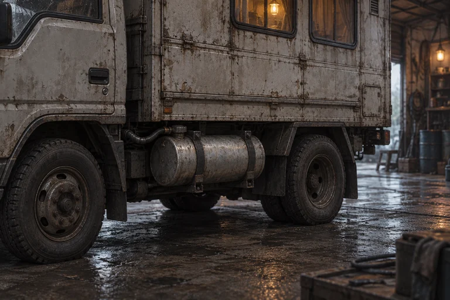
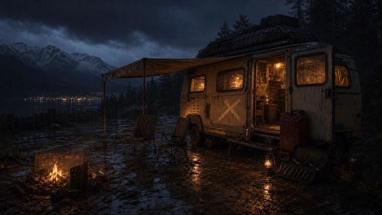

기존 고화질을 유지하며 정비와 야영의 결과를 더 가까이 보여줍니다. 고정 예시이며 게임 시간·자원·저장과 연결되지 않습니다.
고른 부품을 미리 보고, 비용을 확인한 뒤 장착합니다.

현재 차량과 장착 미리보기를 비교한 뒤 결정합니다.
차량 전후 비교와 실제 소모 내역을 함께 표시합니다.
분해 · 체결 · 작동 확인

식사나 차량 점검을 고르거나 바로 쉴 수 있습니다.
대화는 얼굴이 보이는 기존 대화 화면에서 직접 읽습니다.